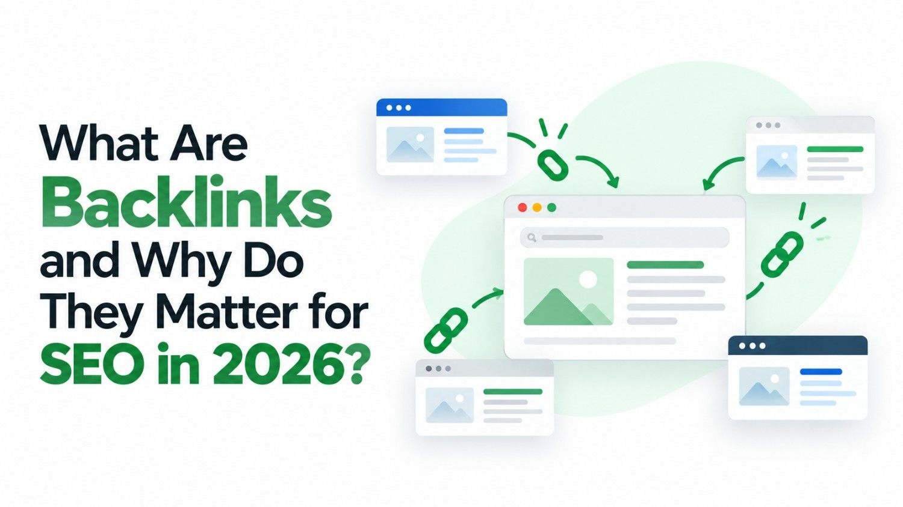

If you have ever explored SEO or tried to improve your website's visibility on Google, you've likely come across the term backlinks. They are one of the most discussed and debated topics in search engine optimization - and for good reason. Backlinks have been a core ranking signal since the early days of Google, and they remain just as relevant in 2026.
But what exactly are backlinks, how do they work, and why should your business care about them? This guide breaks it all down in simple terms.
What Is a Backlink?
A backlink is simply a link from one website to another. When an external website links to a page on your site, that link is called a backlink - also known as an inbound link or incoming link.
Think of it this way: if a popular news website writes an article and includes a link to your business's blog post, your blog post has earned a backlink from that news website. Search engines like Google treat this as a vote of confidence - a signal that your content is credible and worth referencing.
Why Do Backlinks Matter for SEO?
Google's algorithm considers hundreds of ranking factors, but backlinks have consistently been among the most powerful. Here's why they matter:
- Authority signals: Links from reputable websites pass authority (often called "link juice") to your site, boosting its trustworthiness in Google's eyes.
- Higher rankings: Pages with more quality backlinks tend to rank higher on search engine results pages (SERPs).
- Faster indexing: Search engine crawlers discover new pages by following links, so backlinks help your content get indexed quicker.
- Referral traffic: A link on a high-traffic website can send real visitors directly to your page, independent of search rankings.
According to Google's own documentation on how search works, links are one of the primary ways Google discovers and evaluates content across the web.
Types of Backlinks
Not all backlinks are created equal. Understanding the different types helps you focus your efforts on what actually moves the needle.
- DoFollow links: These pass SEO authority from the linking site to yours. They are the most valuable type for ranking purposes.
- NoFollow links: These tell search engines not to pass authority, but they can still drive traffic and contribute to a natural link profile.
- Editorial links: Earned naturally when other sites find your content genuinely valuable - the most powerful type.
- Guest post links: Acquired by writing content for another website and including a link back to your own.
Want More High-Quality Backlinks?
Our team builds links that actually improve your rankings - no shortcuts, no penalties.
Quality Over Quantity
One of the biggest misconceptions about backlinks is that more is always better. In reality, one backlink from a highly authoritative, relevant website is worth far more than dozens of links from low-quality or spammy sources.
Google's algorithms - particularly the Penguin update - actively penalise websites that engage in manipulative link-building practices such as buying links or participating in link schemes. Focus on earning genuine, relevant links that reflect real trust in your content.
Backlinks and Off-Page SEO
Backlinks are the cornerstone of off-page SEO - the practice of improving your site's authority and reputation through activities that happen outside your own website. While on-page SEO covers what's on your pages, off-page SEO is largely about how other websites perceive and reference your content. A strong backlink profile is the single most impactful off-page signal you can build.
How to Start Building Backlinks
Building quality backlinks takes time and strategy, but it is achievable for businesses of all sizes. Here are proven approaches to get started:
- Create genuinely useful, shareable content that others naturally want to reference
- Publish guest posts on relevant industry blogs and news sites
- List your business in trusted local and industry directories
- Reach out to websites that mention your brand without linking and request a link
- Build partnerships with complementary businesses for natural cross-linking
Conclusion
Backlinks are a fundamental pillar of SEO. They signal trust, authority, and relevance to search engines - three qualities that directly influence how your website ranks. Whether you are a small local business or a growing e-commerce brand, investing in a clean, high-quality backlink strategy is one of the highest-return activities in digital marketing.
Start by creating content worth linking to, build relationships within your industry, and let your backlink profile grow organically over time. The results will speak for themselves.